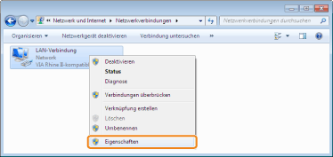
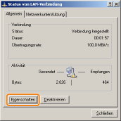
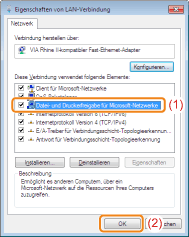

Überprüfen Sie vor dem Konfigurieren des Druckservers die Einstellungen Ihrer Netzwerkumgebung folgendermaßen.
1
Gehen Sie folgendermaßen vor.

Wählen Sie aus dem Menü [Start] die Option [Einstellungen] → [Netzwerk und DFÜ-Verbindungen] aus.

Wählen Sie aus dem Menü [Start] die Option [Systemsteuerung] aus, und klicken Sie dann auf [Netzwerk- und Internetverbindungen] → [Netzwerkverbindungen].

Wählen Sie aus dem Menü [Start] die Option [Systemsteuerung] aus, und klicken Sie dann auf [Netzwerkstatus und -aufgaben anzeigen] → [Netzwerkverbindungen verwalten].


Wählen Sie aus dem Menü [Start] die Option [Systemsteuerung] aus, und klicken Sie dann auf [Netzwerkstatus und -aufgaben anzeigen] → [Adaptereinstellungen ändern].

Wählen Sie aus dem Menü [Start] die Option [Systemsteuerung] → [Netzwerkverbindungen] → [LAN-Verbindung] aus.

Wählen Sie aus dem Menü [Start] die Option [Systemsteuerung] aus, doppelklicken Sie auf [Netzwerk- und Freigabecenter], und klicken Sie dann auf [Netzwerkverbindungen verwalten].
2
Zeigen Sie das Dialogfeld [Eigenschaften von LAN-Verbindung] an.
Klicken Sie mit der rechten Maustaste auf das Symbol [LAN-Verbindung], und wählen Sie dann aus dem Kontextmenü [Eigenschaften] aus.

Klicken Sie auf [Eigenschaften].

 Wenn das Dialogfeld [Benutzerkontensteuerung] angezeigt wird Wenn das Dialogfeld [Benutzerkontensteuerung] angezeigt wirdKlicken Sie auf [Ja] oder auf [Fortsetzen].
|
3
Vergewissern Sie sich, dass [Datei- und Druckerfreigabe für Microsoft-Netzwerke] ausgewählt ist.
|
(1)
|
Vergewissern Sie sich, dass das Kontrollkästchen [Datei- und Druckerfreigabe für Microsoft-Netzwerke] aktiviert ist.
(Wenn das Kontrollkästchen nicht aktiviert ist, aktivieren Sie es.)
|
|
(2)
|
Klicken Sie auf [OK].
|

|
HINWEIS
|
|
Wenn Sie Windows XP verwenden
Sie können den Druckserver nicht mit den Standardeinstellungen des Betriebssystems (die Einstellungen direkt nach der Installation) konfigurieren.
Bevor Sie den Druckserver konfigurieren, führen Sie den [Netzwerkinstallations-Assistent] aus, um die Einstellungen für die Druckerfreigabe zu aktivieren.
Nähere Informationen finden Sie in der Windows-Hilfe.
|